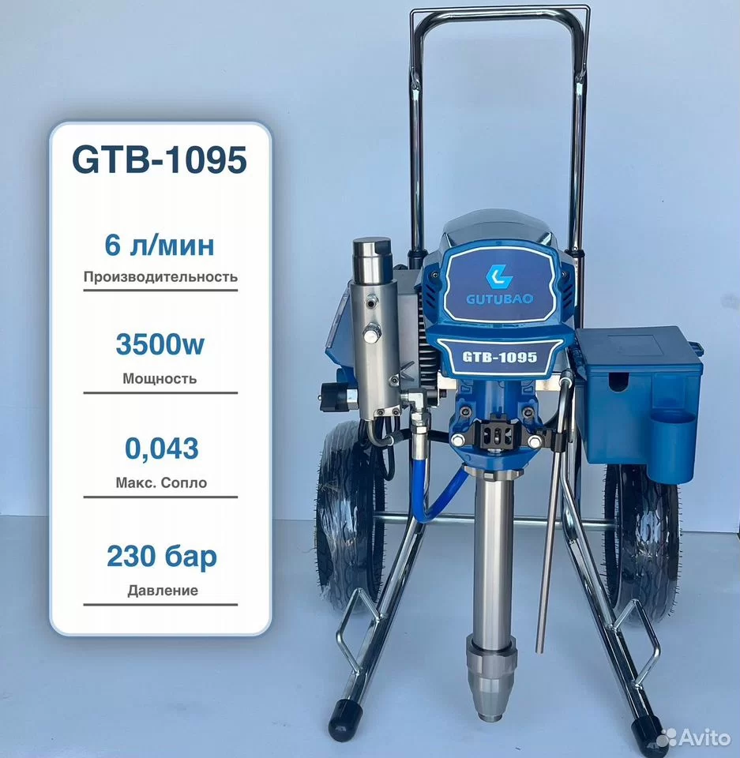

Новая позиция · по объявлению
Черновик · проверить перед публикациейОкрасочный аппарат GTB-1095
Оборудование на тележке для безвоздушного распыления. Комплектация показана на фотографиях объявления.
Цена по объявлению
97 375 ₽
Нужно сверить марку и мощность
На корпусе и фотографии указано GUTBAO GTB-1095 и 3500 Вт; в тексте объявления — Graco и 4000 Вт. Не представляю эти сведения как подтверждённые.
- Производительность*
- 6 л/мин
- Мощность*
- 3500 Вт / 4000 Вт
- Напряжение*
- 220 В
- Давление
- 230 бар
- Макс. сопло*
- 0.043″
- Марка и модель*
- GUTBAO GTB-1095 / Graco
* Данные переписаны с фото, скриншота и текста объявления, не со сверенного паспорта модели. Актуальную цену, наличие и точный комплект уточните у продавца.
Уточнить карточку